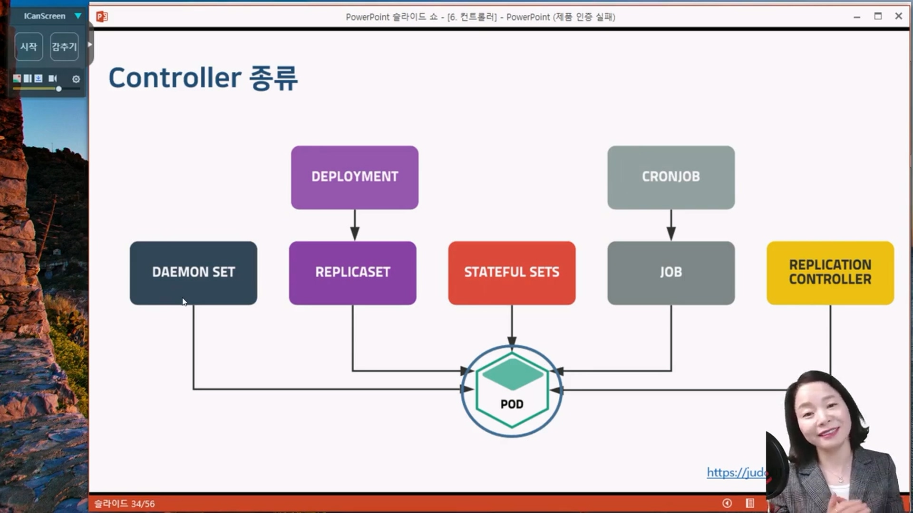

컨트롤러
컨트롤러
클러스터의 상태를 감시하고 현재 상태와 원하는 상태가 일치하도록 관리하는 작업
Pod의 개수를 보장
kubectl create deployment webui --image=httpd:latest --replicas=3
{kind=link}

출처 : 유튜브 따배런 따배쿠 https://www.youtube.com/@ttabae-learn
ReplicationController
Pod의 인스턴스가 항상 특정 개수로 작동하도록 관리할 목적으로 사용. Pod의 replicas 설정에 따라 자동으로 Pod의 인스턴스를 추가 제거한다.
#Pod-definition
apiVersion: v1
kind: Pod
metadata:
name: nginx-pod
labels:
app: webui
spec:
containers:
- name: nginx-container
image: nginx:1.14
#ReplicationController-definition
apiVersion: v1
kind: ReplicationController
metadata:
name: rc-nginx
spec:
replicas: 3
selector:
app: webui
template:
metadata:
name: nginx-pod
labels:
app: webui
spec:
containers:
- name: nginx-container
image: nginx:1.14RollingUpdate 때문이라도 Deployment 사용을 권장
ReplicaSet
ReplicaSet은 pod 집합의 실행을 항상 안정적으로 유지하며, 명시된 pod 개수를 보증하는데 사용된다.
더 다양한 selector 연산자를 제공.


cat rs-nginx.yaml
apiVersion: apps/v1
kind: ReplicaSet
metadata:
name: rs-nginx
spec:
replicas: 3
selector:
matchLabels:
app: webui
template:
metadata:
name: nginx-pod
labels:
app: webui
spec:
containers:
- name: nginx-container
image: nginx:1.14
kubectl get pods --show-labels
NAME READY STATUS RESTARTS AGE LABELS
rs-nginx-cxrrn 1/1 Running 0 65s app=webui
rs-nginx-kxvrj 1/1 Running 0 65s app=webui
rs-nginx-xmzxm 1/1 Running 0 65s app=webui
kubectl get rs
NAME DESIRED CURRENT READY AGE
rs-nginx 3 3 3 2m5skubectl delete rs rs-nginx --cascade=falsepod는 그대로 두고, rs만 삭제하고 싶을때 cascade옵션을 준다.
Deployment
상태가 없는 앱을 배포할 때 사용하는 가장 기본적인 컨트롤러이다.
Deployment의 목적은 rolling update를 위해서 만들어졌다.
Deployment는 ReplicaSet를 관리하면서 배포 방식, 버전 롤백 등이 설정 가능하다.
cat deploy-nginx.yaml
apiVersion: apps/v1
kind: Deployment
metadata:
name: deploy-nginx
spec:
replicas: 3
selector:
matchLabels:
app: webui
template:
metadata:
name: nginx-pod
labels:
app: webui
spec:
containers:
- name: nginx-container
image: nginx:1.14
#Deployment 가 ReplicaSet을 호출하고, 호출된 ReplicaSet이 pod를 관리한다
kubectl get kubectl get deploy,rs,pod
NAME READY UP-TO-DATE AVAILABLE AGE
deployment.apps/deploy-nginx 3/3 3 3 95s
NAME DESIRED CURRENT READY AGE
replicaset.apps/deploy-nginx-5cfbcf5f65 3 3 3 95s
NAME READY STATUS RESTARTS AGE
pod/deploy-nginx-5cfbcf5f65-2f7v5 1/1 Running 0 95s
pod/deploy-nginx-5cfbcf5f65-942vh 1/1 Running 0 95s
pod/deploy-nginx-5cfbcf5f65-lqw2d 1/1 Running 0 95s

RollingUpdate
[Rolling update]
kubectl set image deployment <deploy_name> <container_name>=<new_version_image>
[RollBack]
kubectl rollout history deployment <deploy_name>
kubectl rollout undo deploy <deploy_name>
#1.15로 이미지버전을 업데이트
kubectl set image deployment deploy-nginx nginx-container=nginx:1.15 --record
#1.16으로 이미지버전을 업데이트
kubectl set image deployment deploy-nginx nginx-container=nginx:1.16 --record
#rolling update 진행과정 조회
kubectl rollout status deployment deploy-nginx
#rolling update 잠시 중지, 배포이후에 해봐야 소용없음
kubectl rollout pause deployment deploy-nginx
#rolling update 재개
kubectl rollout resume deployment deploy-nginx
#rolling update 히스토리 조회
kubectl rollout history deployment deploy-nginx
REVISION CHANGE-CAUSE
1 <none>
2 kubectl set image deployment deploy-nginx nginx-container=nginx:1.15 --record=true
3 kubectl set image deployment deploy-nginx nginx-container=nginx:1.16 --record=true
4 kubectl set image deployment deploy-nginx nginx-container=nginx:1.17 --record=true
#바로 한단계 전으로 롤백
kubectl rollout undo deployment deploy-nginx
#히스토리의 REVISION번호값으로 undo.
#위의 예시에선 2번으로 rollback되면 2번이 사라지고 5번으로 나타난다.
kubectl rollout undo deployment deploy-nginx --to-revision=2
#deployment 삭제
kubectl delete deployments.apps deploy-nginx#yaml파일로 rollout 버전관리시, 아래항목으로 관리하면 좀 더 나은 이력관리를 할 수 있다.
apiVersion: apps/v1
kind: Deployment
metadata:
name: deploy-nginx
annotations:
kubernetes.io/change-cause: version 1.14
spec:
replicas: 3
selector:
matchLabels:
app: webui
template:
metadata:
labels:
app: webui
spec:
containers:
- name: web
image: nginx:1.14
ports:
- containerPort: 80
DaemonSet
전체노드에서 노드 당 Pod가 한 개씩 실행되도록 보장
로그 수집기, 모니터링 에이전트와 같은 프로그램 실행 시 적용
데몬셋이 대상으로 하고 있던 노드가 클러스터에 제거되는 경우, 다른 노드로 이동하여 파드를 실행시키지 않고 제거된다.
cat > daemonset-exam.yaml
apiVersion: apps/v1
kind: DaemonSet
metadata:
name: daemonset-nginx
spec:
selector:
matchLabels:
app: webui
template:
metadata:
name: nginx-pod
labels:
app: webui
spec:
containers:
- name: nginx-container
image: nginx:1.14
kubectl create -f daemonset-exam.yaml#데몬셋의 롤링업데이트는
kubectl get daemonsets.apps
#spec.template.spec.containers.image 의 버전을 변경하고 wq
kubectl edit daemonsets.apps daemonset-nginx
#데몬셋의 롤백은
kubectl rollout undo daemonset daemonset-nginx
#데몬셋 삭제
kubectl delete ds daemonset-nginxkubeadm token list <-- 토큰이 만료되었다면
kubeadm token create --ttl 2h <-- 2시간짜리 토큰 발급
alhqgn.8nq5n7a3kpovamsp
노드에 접속한 상태에서(마스터 아님!!)
예전에 token.txt 저장된 값 기억나는가? 거기서 토큰쪽만 위의 토큰으로 변경하여 다시 실행한다.

StatefulSet
Pod의 상태를 유지해주는 컨트롤러
- Pod의 이름
- Pod의 볼륨
스테이트 풀 세트는 상태가 있는 파드를 관리하는 컨트롤러 입니다. 상태가 있다는 의미는 컨테이너가 종료되더라도 컨테이너에서 필요로 하는 데이터가 남게(Stateful 한 상태)되어 파드를 재시작 하더라도 데이터를 보존할 수 있다.
#생성
cat > statefulset-exam.yaml
apiVersion: apps/v1
kind: StatefulSet
metadata:
name: sf-nginx
spec:
replicas: 3
serviceName: sf-service
# podManagementPolicy: OrderedReady <---- 순차적으로 0,1,2 ?
podManagementPolicy: Parallel < --- 패러럴하게 번호를 채워줌 012 있었는데 1이 죽으면 1이 재생성. 추가되면 3이 생김. 제거되면 2가 제거
selector:
matchLabels:
app: webui
template:
metadata:
name: nginx-pod
labels:
app: webui
spec:
containers:
- name: nginx-container
image: nginx:1.14
#Pod확인
kubectl get pods -o wide
NAME READY STATUS RESTARTS AGE IP NODE NOMINATED NODE READINESS GATES
sf-nginx-0 1/1 Running 0 2m2s 10.44.0.1 node1.example.com <none> <none>
sf-nginx-1 1/1 Running 0 89s 10.36.0.1 node2.example.com <none> <none>
sf-nginx-2 1/1 Running 0 2m2s 10.44.0.2 node1.example.com <none> <none>
#pod 삭제
kubectl delete pod sf-nginx-1 #<-- 1번을 지우면 어떻게 될까?, 죽었다가 replicas때문에 다시 살아나면서 1번을 유지한다.
#Scale out
kubectl scale statefulset sf-nginx --replicas=4 #<-- sf-nginx-3 pod가 생긴다
#kubectl edit statefulsets.apps sf-nginx 로 롤링업데이트 할 수 있고
#kubectl rollout undo statefulset sf-nginx 로 undo 할 수 있다
#삭제
kubectl delete statefulsets.apps sf-nginx
Job
배치성 작업을 진행하기 위해 사용하는 컨트롤러.
Kubernetes는 Pod를 running 상태로 유지
Batch 처리하는 Pod는 작업이 완료되면 종료됨
Batch 처리에 적합한 컨트롤러로 Pod의 성공적인 완료를 보장
- 비정상 종료 시 다시 실행
- 정상 종료시 완료
#pod 실행 후 5초뒤에 종료되며, 쿠버네티스는 이를 다시 리스타트 시킨다 (반복)
kubectl run testpod --image=centos:7 --command sleep 5
#job 생성
cat > job-exam.yaml
apiVersion: batch/v1
kind: Job
metadata:
name: centos-job
spec:
# completions: 5
# parallelism: 2
# activeDeadlineSeconds: 5
template:
spec:
containers:
- name: centos-container
image: centos:7
command: ["bash"]
args:
- "-c"
- "echo 'Hello World'; sleep 50; echo 'Bye'"
restartPolicy: Never
# restartPolicy: OnFailure
# backoffLimit: 3
#job 실행 : 실행되고 Running상태였다가 50초뒤에 Completed 상태로 pod가 변경된다.
kubectl create -f job-exam.yaml
#job 삭제
kubectl delete jobs.batch centos-job
#vi job-exam.yaml 해서 backoffLimit를 3(정의하지 않으면 디폴트6),
#restartPolicy: OnFailure 으로 수정한다면
# --> 컨테이너가 비정상 종료시 pod를 리스타트가 아니라 컨테이너를 리스타트 시키는데 3번까지 한다.
#vi job-exam.yaml 해서 restartPolicy: Never로 수정한다면
# --> 컨테이너가 비정상 종료시 pod를 리스타트 시킨다
#vi job-exam.yaml 해서 completions:3 로 수정한다면,
#템플릿에 있는 컨테이너를 3번 실행하겠다는 의미
# --> pod가 3개 실행되고, Completed 상태로 남음
#vi job-exam.yaml 해서 parallelism:2 로 수정한다면,
#템플릿에 있는 컨테이너를 2개씩 동시에 실행하겠다는 의미
# --> completions:3, parallelism:2 상태였다면, pod가 2개씩 3번 실행된다.
#vi job-exam.yaml 해서 activeDeadlineSeconds:5 로 수정한다면,
#애플리케이션이 5초안에 끝나지 않으면 완료처리 해버린다.CronJob
사용자가 원하는 시간에 JOB 실행 예약 지원
지정한 시간에 한번만 잡을 실행하거나 지정한 시간동안 주기적으로 잡을 반복할 수 있다.
# ┌───────────── minute (0 - 59)
# │┌───────────── hour (0 - 23)
# ││┌───────────── day of the month (1 - 31)
# │││┌───────────── month (1 - 12)
# ││││┌───────────── day of the week (0 - 6) (Sunday to Saturday; <--- 일요일 에서 토요일까지임
# │││││ 7 is also Sunday on some systems)
# │││││ OR sun, mon, tue, wed, thu, fri, sat
# │││││
# * * * * *
#매월 1일 3시에 실행 <--- "0 3 1 * *"
#주중 새벽3시에 job을 실행 <--- "0 3 * * 1-5"
#주말 새벽3시에 job을 실행 <--- "0 3 * * 0,6"
#5분마다 한번씩 job을 실행 <--- "*/5 * * * *"
#2시간마다 한번씩 job을 실행 <--- "0 */2 * * *"
#실행
cat > cronjob-exam.yaml
apiVersion: batch/v1
kind: CronJob
metadata:
name: cronjob-exam
spec:
schedule: "* * * * *"
startingDeadlineSeconds: 500 #<-- 500초안에 안끝나면 취소시키겠다
# concurrencyPolicy: Allow #<-- Allow 가 디폴트이며, Allow면 작업이 1분마다 하는 작업인데 시간이 넘어가더라도 또 실행된다.
concurrencyPolicy: Forbid #<-- 완료되지 않으면 새로 실행하지 않는다.
jobTemplate:
spec:
template:
spec:
containers:
- name: hello
image: busybox
args:
- /bin/sh
- -c
- echo Hello; sleep 10; echo Bye
restartPolicy: Never
kubectl create -f cronjob-exam.yaml
# 매 1분 정각에 실행되고, 10초뒤에 completed 되버림
# 다음 1분에 새로운 pod로 실행되고... 다음1분에 새로운 pod로 실행되고...
# pod가 계속 쌓이는가? 아니다. successfulJobsHistoryLimit: 3 가 기본값으로서, 3개까지만 유지된다.
kubectl get cronjobs.batch -o yaml
kubectl delete cronjobs.batch cronjob-exam